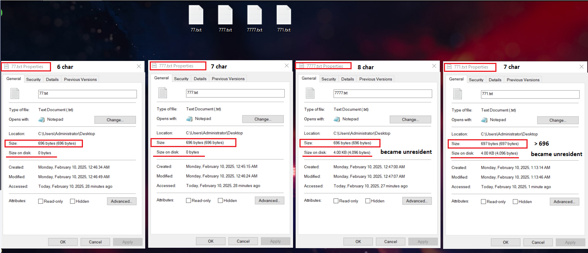

The Last Two Bytes: Resident Data and Fixup Artifacts in NTFS
Introduction
The Master File Table (MFT) in NTFS plays a critical role in file storage by managing metadata and determining whether file content is stored within the MFT itself (resident data) or externally in clusters (non-resident data). Understanding the conditions that influence resident data storage is essential for digital forensics and incident response, as these conditions impact how files are structured within the NTFS file system.
This study examines the relationship between file size, filename length, and resident data behavior, providing a structured methodology to determine the threshold at which file content transitions from resident to non-resident storage. Additionally, it was observed that when data remains resident within the MFT, a structural modification occurs within the File Record at offset 0x1FE. This behavior may have forensic implications, particularly in file integrity verification and malware investigations.
By understanding these patterns, forensic analysts can improve their ability to detect resident malware, reconstruct file system events, and evaluate the integrity of NTFS file records during investigations.
Analysis of Resident and Non-Resident Data in the NTFS Master File Table (MFT)
Resident Data Threshold Based on File Size and Filename Length
The length of a filename is a critical factor in determining whether file content remains resident within the MFT. Variations in filename length directly influence the size of the $File_Name attribute, which, in turn, affects the available space for storing file content within the MFT. As filename length increases, additional space is occupied by the $File_Name attribute, reducing the amount of space available for resident data. This relationship must be carefully considered when analyzing NTFS structures in forensic investigations.
Resident Data Behavior for Filenames ≤ 7
-
When filenames contained 7 characters or fewer, including the file extension (e.g.,
777.txt,77.txt,7.txt), the$File_Nameattribute length was measured as 0x68 bytes.
-
It was observed that when the file size remained ≤ 696 bytes, the file content was stored resident within the MFT.
- However, when the file size increased by just one additional byte (697 bytes total), the data became non-resident, causing the file size on disk to expand to 4 KB, despite the actual file content being only 697 bytes.
-
When the filename exceeded 7 characters, the
$File_Nameattribute length increased to 0x70 bytes, requiring a smaller file size (below 696 bytes) to maintain resident storage.
Resident Data Behavior for Filenames Between 8 and 11 Characters
-
The file name attribute length was measured as 0x70 bytes when using a 8…11 characters, including the file extension (e.g.,
8888.txt,88888.txt,888888.txt).
-
To determine the maximum resident data size for filenames between 8 and 11 characters, the difference in attribute length was calculated:
- 0x70 - 0x68 = 0x8 (in decimal: 8 bytes reduction in available resident space).
- The adjusted resident data limit becomes 688 bytes instead of 696 bytes. (696-8=688)
- When filenames ranged between 7 and 11 characters, file content remained resident up to 688 bytes.
-
However, when filenames exceeded 11 characters, data became non-resident, even if the file size was within the expected resident threshold.

Resident Data Behavior for Filenames Longer Than 11 Characters
-
When filenames exceeded 11 characters, the
$File_Nameattribute length increased to 0x78 bytes.
-
Applying the same methodology, the reduction in available resident space is:
- 0x78 - 0x68 = 0x10 bytes (in decimal: 16 bytes reduction in available resident space).
- The new maximum resident data size is 680 bytes. (696-16 = 680)
Note
This pattern was expected to remain consistent; however, an issue arose due to Microsoft’s definition of Long File Names (LFN). So it worked for 12 characters but not 13 and above even though they both have the same
$File_Nameattribute length which is **0x78.
All tests were conducted with filename extensions included (We considered the dot
.as a character). If the extension is removed, the results differ, and this aspect will be discussed in the following section.
Long Filenames Longer Than 12 Characters, and Their Effect on Resident Data
-
When filenames contained ≥ 13 characters (including the extension) or ≥ 9 characters (excluding the extension), they were observed to be treated as Long File Names (LFN) by the MFT.
- Explanation: NTFS defines long filenames as those exceeding 8 characters plus a 3-character extension (e.g.,
"SANS12345.TXT").
- Explanation: NTFS defines long filenames as those exceeding 8 characters plus a 3-character extension (e.g.,
-
When a filename is classified as an LFN, additional content is written to the
$File_Nameattribute, increasing its size and altering the expected pattern.Info
The presence of variable-length long filenames modifies the content size of the
$File_Nameattribute, which subsequently impacts the available space for resident data.

-
Notice the size of the content = 0x5A and File is treated as Long File Name.
Info
As a result, no consistent pattern could be established for predicting the maximum resident data size when filenames exceeded the long filename threshold.
File Record Modifications When Data Is Resident [Important]
A critical forensic artifact was identified when analyzing resident data storage in NTFS. When file content remains resident within the Master File Table (MFT), a modification occurs in the File Record structure at offset 0x1FE. This offset corresponds to 510 bytes, which is less than the sector size (512 bytes) by 2 bytes.
Key Observations:
-
The 2 bytes at
0x1FEare replaced with a fixup value from the Fixup Array (USA) as part of NTFS's Update Sequence Number (USN) Fixup process. The original 2 bytes from0x1FEare stored in the Fixup Array at0x32for integrity verification during read operations.

Reason for MFT Modification at Offset 0x1FE:
The observed behavior is a direct result of NTFS's Update Sequence Number (USN) Fixup mechanism. This mechanism is designed to protect the integrity of critical file system structures, such as the MFT, by ensuring that sector boundaries are properly validated during disk read/write operations.
When a file record is resident within the MFT, the last two bytes of each 512-byte sector (i.e., 0x1FE in the first sector) must be protected against corruption. To achieve this, NTFS replaces these bytes with a fixup value and stores the original bytes in the Fixup Array.
How Fixup Values Work:
The fixup process follows these steps:
- NTFS assigns a Fixup Value
- At the start of an MFT record, NTFS maintains an Update Sequence Number (USN), which increments with each modification.
- This value is stored at a predefined location, typically within the Fixup Array (USA).
- Overwriting the Last Two Bytes
- The last two bytes of each sector (e.g.,
0x1FEfor the first sector) are replaced with the fixup value. - The original bytes are saved in the Fixup Array for later recovery.
- The last two bytes of each sector (e.g.,
-
Integrity Check on Read Operations
- When the file system reads the MFT record, it checks whether the last two bytes of each sector match the stored fixup value.
- If they match, NTFS restores the original bytes from the Fixup Array.
- If they do not match, NTFS detects corruption and prevents the use of the damaged record.
Note
All addresses are relative to the start of the File Record
Implications for Digital Forensics and Malware Analysis
- The modification of offset
0x1FEwhen storing resident data could have implications for file integrity verification and malware investigations. - If a file contains malicious code as resident data, this behavior may interfere with forensic procedures that rely on static file hashing, as the altered MFT structure may affect hash calculations and file integrity verification.
- This could present a challenge when using file hashes as Indicators of Compromise (IOCs) in threat hunting and digital forensics investigations.
Key Takeaways
- The length of a filename influences whether file content remains resident within the MFT by modifying the
$File_Nameattribute length. - The transition from resident to non-resident data occurs at different file size thresholds depending on filename length.
- When filenames exceed 12 characters, the presence of long filenames (LFN) disrupts the observed pattern, making resident storage behavior less predictable.
- A forensic artifact was identified in which offset
0x1FEis modified when file content is stored as resident data, potentially affecting forensic hashing and malware detection.
Conclusion
This study highlights key findings regarding the relationship between file size, filename length, and MFT resident data storage behavior. A clear correlation has been established between filename length and the available resident data space within the MFT, demonstrating how filenames influence the transition from resident to non-resident storage. However, filename attribute is just one of several factors affecting the size of resident data. Our analysis considers only the creation of a basic file, not including other cases such as data compression and encryption, which introduce additional attributes that can impact data residency. The identification of modifications at offset 0x1FE presents a potential forensic artifact that could be leveraged for detecting resident malware and analyzing NTFS anomalies, as many people may extract resident data incorrectly. These findings emphasize the importance of considering filename length and other influencing factors during forensic investigations, as even minor changes in naming conventions or storage attributes can significantly impact data residency within NTFS file structures.
Credits
Khaled Allam - Linkedin
Ahmed Mahmoud Fathy - LinkedIn